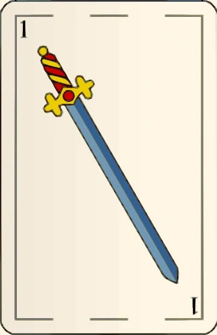
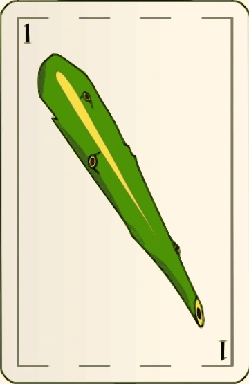
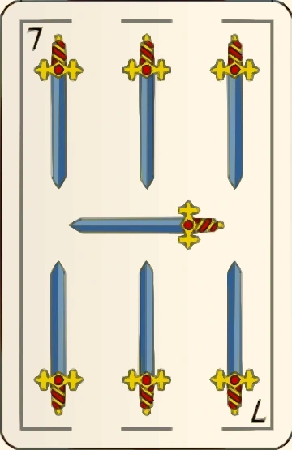
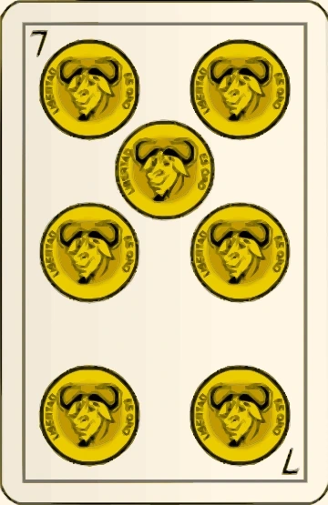

La mano
Se reparten tres cartas por jugador. Mano y reparto alternan. Ganás dos de las tres bazas; las cartas jugadas quedan sobre el paño. En una parda vuelve a salir quien abrió esa baza. Primera ganada y segunda parda: gana la primera. Primera parda: decide la segunda. Dos primeras pardas: decide la tercera; tres pardas: gana mano. Primera y segunda repartidas y tercera parda: gana la primera.
La jerarquía
1 de espadas › 1 de bastos › 7 de espadas › 7 de oros › todos los 3 › todos los 2 › 1 de oros/copas › 12 › 11 › 10 › 7 de bastos/copas › 6 › 5 › 4.




Truco y sus respuestas
Sin canto: 1 tanto. Truco querido: 2; retruco: 3; vale cuatro: 4. Si no querés: 1, 2 o 3, respectivamente. Sólo quien aceptó puede subir. «Quiero retruco» y «Quiero vale cuatro» aceptan el canto anterior y suben. Ir al mazo concede el valor vigente.
El envido está primero
Podés iniciarlo antes de jugar tu primera carta y antes de cantar o aceptar truco, aunque el rival ya haya jugado. También podés responder al primer truco con envido: ese truco espera y se responde después. Dos del mismo palo suman sus valores + 20; las figuras valen 0. Sin pareja: tu carta más alta. Sin flor, tres iguales usan las dos mejores. En empate gana mano. Envido: 2; doble envido: 4; real envido suma 3. La cadena máxima de esta mesa es envido, envido, real envido, falta envido. Rechazar el primer canto da 1; rechazar una subida concede lo anterior, sin agregar 1.
Falta envido · regla de esta mesa
A 30: si ambos están en malas, vale el partido; si uno llegó a buenas, lo que le falta al puntero para 30. A 15: lo que le falta al puntero para 15. También podés elegir la variante «siempre lo que falta al puntero» antes de jugar.
Flor opcional
Tres del mismo palo: flor obligatoria antes de jugar o de otro canto. Bloquea el envido. Una flor sola vale 3. Si ambos tienen flor, se comparan las tres cartas + 20 (máximo 38): 3 por cada flor, total 6. Contraflor vale 6; contraflor al resto, lo que le falta al puntero + 6. «Con flor me achico» entrega 4. El empate favorece a mano. Los tantos se anotan antes del truco; si completan el partido, no se juega el resto de la mano.
Controles
Tocá una carta para elegirla y «Jugar carta» para bajarla. En PC: 1, 2 y 3 seleccionan; Enter juega; Escape pausa. Los controles se habilitan sólo cuando el canto es legal. Usá ajustes para cambiar los tres volúmenes por separado.
Arte y derechos
Baraja española: Basquetteur / Wikimedia Commons, vectorización de gjenkins20. Conversión a WebP; sin redibujar las ilustraciones. Fuente · CC BY-SA 3.0. Ambientación y Don Truco: recursos generados para este proyecto. Tango y efectos: composición y síntesis originales. Créditos completos.
Reglas contrastadas con Pagat y reglamentos argentinos; las variantes elegidas se explican arriba.